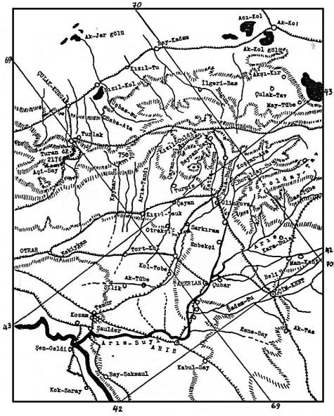
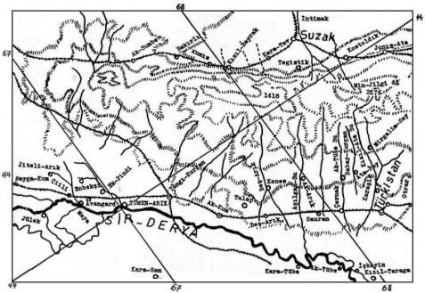

(TERCÜMELER VE SEÇME PARÇALAR)
"İslâm tarihlerinde yazılmıştır. İsrail oğullarının tarihlerinde de yazılmıştır. Nuh Peygamber Aleyhisselâm, yeryüzünü güneyden kuzeye doğru, üç bölüme ayırmıştı".
"Birinci bölümü kendi oğullarından Ham'a vermişti. Ham, Sudan'ın babasıdır. Ortadaki kısmı, yine kendi oğlu olan Sam'a bağışlamıştı. Sam da, Araplarla Farsların babasıdır".
Nuh Peygamber dünyanın üçüncü bölümünü ise, oğullarından Yafes'e vermiştir. Bu ülkeleri oğlu Yafes'e verdiği için, bu oğlunu da dünyanın doğu taraflarına göndermişti. Türkler Yafes'e, Ebülce (?)-Han derler.231 Türkler Yafes'e böyle derler ama; onun Nuh Peygamberin bir oğlu olduğunu da bilmezler. Bununla beraber bu Türk Han'ının Yafes'le aynı çağda yaşadığını ve onunla akraba olduğunu bilirler. Moğolların hepsi, Türk kabileleri ve bütün göçebeler onun neslinden gelirler".
Türklerin ilk atası Bulca-Han: Sonradan düzülen birçok soy kütükleri, Peygamberler tarihine göre, Nuh Peygambere bağlanmışlardır, İslâm dinini kabul eden Türklerin böyle yeni şecereler kurmaları normal kabul edilmelidir. Çingiz-Han çağında, Çingiz-Han ve oğulları da, kendi sarayları ve hanedanları içinde yeni bir soy kütüğü kabul etmişler ve kendilerini de Türklerin atalarına bağlamışlardır. Belki de bu inanış ve mitoloji, çok eski çağlardan beri Moğollar içinde yaşıyordu. İptidai bir hayattan kurtulup, büyük bir imparatorluk kuran Moğolların, eskiden beri şerefli ve büyük bir tarihe sahip olan ve kendi devletlerinde de büyük bir nüfuz ve itibar içinde yaşayan Türklerle bir yakınlık görüp, soy kütüklerini onlara bağlamak istemiş olmaları da çok muhtemeldir. Sino-Turcica adlı eserimizde de gösterdiğimiz gibi, Çingiz'e ve oğullarına insanlık ve bilgi, hep Türkler vasıtası ile öğretilmişti.
Bu sebeple, Çingiz-Han çağında yazılan Oğuz destanları Peygamberler tarihine pek itibar etmemişler ve kendilerinin menşelerini, ilk-ata Bulca-Han ile başlatmışlardı. Bununla beraber, ne de olsa İslamiyet’in tesiri altında olan yazarlar, Bulca-Han'ın Nuh'un oğlu Yafes olduğunu da söylemeyi ihmal etmemişlerdi. Fakat sonraki destanlar, meselâ Ebülgazi Bahadır Han. Türklerin soy kütüğüne Yafes ile başlamış ve Bulca-Han'ı da onun soylarına bağlamıştı.
Bulca-Han'ın adı kaynaklarda çok değişik olarak yazılır. Fakat kaynakların genel olarak birleştiği yazı; şekli (orthographie), Bulca ve Abulca (veya Ebülce) formu üzerinde birleşir.232 Bunu Olca okuyanlar da olmuştur. Bilhassa Moğol tesirinin çoğaldığı Hafız-Abru nüshalarında, tam belirli olmamakla beraber, Olca/Olcai okunabilecek yazılışlara rastlayabiliyoruz.233 Olca sözü, Moğolcada "ganimet, savaş alıntısı" manasına gelir. Bu söz, Moğolca ol-, "bulmak, sahip olmak" fiil kökünden türemiştir. Moğolca metinlerden anladığımıza göre bu deyim başlangıçta, öldürüp yok edip malını alma ve bu yolla ganimete sahip olma anlamına gelmiyordu. İlk zamanlarda bu sözün daha ziyade manevî, dinî ve oldukça da insanî bir manası vardı. Meselâ sonradan evlât edinilen bir çocuğu bulma ve bu çocuk, bir olca/olcay'dı. Bu, bir "kısmet," Tanrı tarafından gönderilmiş ve verilmiş bir hediyedir. Bu sebeple bir hükümdar adı olan Olcailu (Olcaytu), "Olcaylı, yani "kısmetli" manasına gelirdi.
Moğolcadaki ol-, fiil kökünün Türkçedeki karşılığı bul- ( = bulmak)dır. Moğolca Olca ve Türkçe Bulca, aynı anlamları ifade ederler ve aynı gramer türeyişlerinden meydana gelmişlerdir.234 Bununla beraber Olca sözü Türkçede de vardır. Aklı başında filologlar, hemen meseleyi basite bağlayıp, "bu söz, Moğolcadan Türkçeye geçmiştir," diye kolay bir sonuca varamamışlardır.235 Eski Türkçede bolmak (> olmak) örnekleri, bilhassa Bang gibi filologları kesin sonuçlara götürmekten alıkoymuştur. Türkçe ve Moğolcada müşterek olan "-ca, - ça" ekinin fonksiyonu da henüz daha tam olarak belirtilememiştir.236
Bulca, mitolojik bir sözdür. Mitolojik sözler, o dillerin birer fosilleridir. Bu sebeple Avrupa'da, mitolojilerde geçen deyimler ve adlar, mukayeseli dil tetkikleri bakımından büyük faydalar sağlamışlardır. Bizim Altay dillerinin araştırma durumu henüz başlangıç noktasındadır.
Bu sebeple bu fosil sözler üzerinde, hemen kesin bir sonuca gitme daima tehlikeli bir hareket olabilir.

Harita 2: Doğu kara - Tav.
Görüşümüze göre, bazı kaynaklarda Abulca/Ebülce diye geçen bu şekil, daha ziyade Arapçanın veya İslami kültür dillerinin tesirleri altında meydana gelmiş olabilir.
Ebülgazi Bahadır Han, Timur hakkında yazılmış bazı tarihlerin tesiri altında kalarak bazı yeni soy kütükleri meydana getirmiştir. Bu gidiş, daha ziyade Orta Asya’da kurulan yeni devletlerin, kendilerini Çingiz-Han ve soyuna bağlama arzusundan ileri gelmiştir. Bütün bu arzularına rağmen, Çingiz-Han'ı, Ortaasya'nın en köklü mitolojisi ve en ünlü atası olan Oğuz-Han’a237 bağlamaktan da geri duramamışlardı. Bu daha doğrusu uydurma şecerelerin, yerli ve köklü mitolojiye baş eğmesinden başka bir şey değildir. Ebülgazi, Bulca-Han'ın iki oğlu olduğunu söyler: Bunlar, Moğol ve Tatar adlı iki çocuktur. Moğol, daha ziyade Türklerin ve Çingiz Hanedanı’nın atası; Tatar ise, gerçek Moğolların ceddidir. Daha doğrusu Çingiz Moğolları, kendilerini diğer Moğollardan ayırmış ve Türklere yakınlaşmışlardır. Bundan sonra da şöyle bir soy kütüğü sırası takip edilmiştir: 1. Moğol, 2. Kara-Han, 3. Oğuz-Han, 4. Kün-Han, 5. Ay-Han, 6. Yulduz (Yıldız)-Han, 7. Mengli-Han, 8. Tenggiz-Han, 9. İl-Ilan, 10. Kıyan ve Negüs'ler. Moğol'u sayarsak onuncu, saymazsak dokuzuncu göbekte, Çingiz-Han'ın ataları olan Kıyan ve Negüs boylarına gelinir. Artık bunlardan sonra Ergenekon'a hapsolma olayı başlar. "Dokuz-Soy" hem Türk ve hem de Moğollarca önemlidir. Fakat "On-Soy" un da Türk mitolojisinde yeri vardır.
Tatar-Han'ın ise "Sekiz-Soy"u vardır. Doğu-Moğollarının kabile teşkilâtında da sekiz sayısı önemlidir. Meselâ Doğu-Moğollarının en önemli bölümü olan Kitan'ların çoğu zaman "Sekiz-Boy"ları vardı.238 Göktürk harfleri ile yazılmış Uygur yazıtlarındaki Sekiz-Oğuz tabirini de unutmayalım.239 Sekiz-Oğuz'lar doğudaki Moğol kabileleri olabilirler. Burada Oğuz deyimi, yalnızca Oğuz kavimlerini gösteren etnik bir ad değildir. Oguş, Ogus, boy anlamına kullanılmış umumî bir deyimdir. Tatar'dan türeyen hanların soy kütüğü de şöyledir:
| 1. Tatar, |
5. Atsız (Adsız)-Han, |
| 2. Buka-Han, |
6. Ordu-Han, |
| 3. Alınca veya Elince-Han, |
7. Baidu (Baydu)-Han, |
| 4. Atlı (Adlı)-Han. |
8. Sewinç (Sevinç)-Han |
Görülüyor ki Baydu hariç, adların hepsi de Türkçedir.
Bulca-Han ile Moğol ve Tatar-Han'lar arasına da, bazı yeni soylar konmuştur. Nuh ve Yafes soyunu ayrı bir bölümde ele alacağız. Timur çağı tarihçilerine ve Ebülgazi'ye göre bu yeni soy kütüğü de şöyle kurulmuştur:
1. Yafes, 2. Türk, 3. Tutuk, 4. Bulca (veya Abulca)-Han240, 5. Dib-Yabgu, 6. Kek (veya Kuyuk)-Han241, 7. Alınca-Han.242
Burada da görülüyor ki, "Yedi-Soy" prensibi, soy kütüğünün kurulmasında bir rol oynamıştır. Şunu unutmamalıyız ki, bizim kitabımız bir tarih eseri değil; Türk mitolojisinin incelenmesi ile ilgilidir. Mitoloji, din ile adet ve an'anelerin yansıdığı bir ayna gibidir. Yoksa Bulca-Han tarihte yaşadı mı, yaşamadı mı diye fikir yürütmeye kalkarsak, o zaman yolumuzdan sapmış oluruz. Zaten bir Han eğer tarihte yaşamış ise, onun bayatı mitoloji incelemelerinden kendiliğinden çıkmış olur. Bu kitapta çok yerlerde bahsettiğimiz gibi, "yedi" sayısı Batı Türklerinde ve Şamanizm'de çok önemli bir rakamdı.
Türkmen şecerelerinde ise Bulca-Han ve oğlu Dib-Yabgu'dan sonra, Oğuz-Han ve nesilleri gelir.
"Bu ilk çağlara ait durumu şöyle anlatırlar: Ebülce-Han bir göçebe hayatı yaşardı. Onun yaylası, çok büyük ve yüksek bir dağ idi. Bu dağa Or-Tağ ve Kür-Tağ243 derlerdi. Bu iki dağ sınırında İnanç adlı bir şehir vardı. Kışlağı da o bölgede idi. Buraya Kara-Korum244 da denirdi. Borsun245, Kakiyan246 ( ?) ve Kara-Korum bu yerlerdedir".
"Or" sözünün Türkçede bulunup bulunmadığı üzerinde şüpheye düşüp de, bu deyimin Moğolca bir ünvan olduğunu söyleyenler de bulunmuştur. Ancak bu sözler söylenirken, Moğolcada "or" sözünün bulunduğu ve bu sözle ilgili bir kaç ünvanın da gösterilmesi gerekirdi. Türkçe ve Türk kültürü yağmaya çıkarılmış bir mal gibidir. Elinde delil olsun olmasın, her önüne gelen ondan bir parçayı alıp başka bir kültüre mal etmeye sanki izinli gibidir. Şunu önceden söylememiz gerekir ki or sözü, Moğolcada ne yaygın bir deyim ve ne de ünvan olarak yoktur. Uygurların menşe efsanesinde Or-Tegin, bu sözle başlayan ilk Türk unvanıdır.247 Artık Or-Han, Or-Tag gibi Türk ünvanları ve yer adları, aynı an'anenin devamından başka bir şey değildirler. Or sözünü Uygur metinlerinde de görüyoruz. Cümlenin gidişine göre, Uygurca yazılarda geçen bu or sözünün, "taht" manasına gelebileceği düşünülmüş ve Bang tarafından böyle tercüme edilmiştir.248 Türkçede "or-" kökü ile başlayan birçok sözlerin varlığı, bir bakıma Bang'a hak verdirmektedir.
Or-Tag, yani Or-dağ, genel olarak Kür-Tag'la beraber söylenmektedir. Bu sebeple Or sözü üzerinde durduktan sonra, Kür-Tag'a geçelim.
Bazılarının Kör-Tag diye okudukları Türklerin bu kutsal dağı, Kür-Tag'dan başka bir şey değildir.249 Bilhassa Ruslardan bazıları bunu Ker-Tag şeklinde bile okumuşlardır. Şunu unutmamalıyız ki, mitoloji bir milletin dini ile kaynaşmış bir bütündür. Bu sebeple Türk mitolojisinde geçen böyle yer ve kişi adları da, Türk dininde ve an'anesinde derin olarak yer tutmuş sözlerden ve deyimlerden seçilir. Daha doğrusu bu deyimler kendilerini, mitoloji içinde kutsal birer sembol olarak göstermişlerdir. Naymanlardan bahseden kaynaklar, Nayman hükümdarlarının, umumiyetle eski Uygur Hakanı Kür-Han'ın unvanını kullandıklarını yazarlar.250 Tarih kaynaklarında böyle bir Uygur Hakanının adına rastlamıyoruz. Fakat Oğuz destanındaki, Oğuz-Han'ın amcası da Kür-Han unvanını taşımaktadır. Türkçede "Kür" ve Moğolcada "Gur", iki kardeş deyimdir. Türkler Kür-Han derken, Moğollar da Gur-Han deyimim kullanırlardı.251 Kara-Hıtay hükümdarı, aslen Moğol bir asıldan geliyordu. Bu sebeple Çin kaynakları ile birçok İslam kaynakları, ona Gur-Han demişlerdi.252 Genel olarak Moğolca adların Türkçe karşılıklarını kullanmayı adet edinmiş İran kaynakları ise, aynı hükümdarı Kür-Han şeklinde adlandırmışlardır.253 "Kür" sözü Türkçeden mi Moğolcaya, yoksa Moğolcadan mı Türkçeye geçmiştir? Bunu ancak Allah bilir. Bir gerçek varsa o da bu sözün her iki dilde de müşterek, yani Türko-Mongol bir söz olduğu ve ayrı ayrı telâffuzlarla söylendiğidir. Moğolcada Gur (veya Gür) sözünün ortaya çıkışından çok evvel, yani daha 1073 de, Türkçede 'Kür" sözü, "Yiğit, kabadayı ve bahadır" anlamına geliyordu.254
Bunları söylemekten maksadımız, Oğuz Destanının en eski, fosilleşmiş, kutsal Türk adet ve an'aneleri ile yer ve kişi adlarını içinde topladığını göstermek içindir.
Or-Tag ve Kür-Tag, tarih kaynaklarında da geçmektedir.255 Düşünce ve prensiplerimize göre, binlerce seneden beri Türk an'ane ve mitolojisinde yer almış olan bu kutsal yer isimlerini, bugün atlaslarda tesadüfen aynı adı taşıyan dağ ve yer adları ile birleştirip büyük sonuçlara varmak doğru değildir. Nasıl, Oğuz destanında yer alan kişilerin tarihte yaşamış insanlarla ilgisi yoksa bu dağlar da mitolojiktir ve bugünkü coğrafya haritalarında yeri yoktur.
Bu dağların yerini tayin etmek için ancak bir yol vardır. O da kanaatimizce, destanın tümünü ve Oğuz-Han'ın yurdunun nereler olabileceğini göz önünde tutarak, bu dağların hangi bölgelerde olabileceğini söylemektir.
Bazı Tarih kaynaklarının söylemelerine rağmen. Or-ve Kür-Tag'ları Kıpçak bozkırına koymanın doğru olmayacağı görüşündeyiz.256 Kıpçak bozkırı Oğuz-Han'ın yurdu değil idi. Burası, yine Oğuz destanına göre oğulluğu Kıpçak'ın kendi namına idare ettiği bir il idi. Hâlbuki bu dağlar, Oğuz-Han'ın dönüp dolaştığı ve en sonunda yine dinlenmek için geldiği kendi öz yaylaları idi. Üç-ok'ların yaylağından bahseden kaynaklar, Kür-Tag'ı Almalıg bölgesine yakın veya hiç olmazsa aynı yayla silsilelerinin bir ucu olarak gösteriyorlar.257 Boz-ok'ların yaylağı ise daha batıda, Sayram ve Kaz-gurd bölgelerinde idi.258 Kür-Tag, eğer Üç-ok yaylalarının batı ucunda idiyse, Talaş vadisine kadar uzaması ihtimali vardı. Bizim kadar orijinal kaynaklara sahip olmamalarına ve mesele üzerinde derin bir şekilde düşünmemelerine rağmen bazı Ruslar, bu dağların Talaş bölgesinde olabileceğini söylememiş de değillerdir.259 Fakat Reşideddin, bu her iki dağın da İnanç şehrine yakın olduklarını söylemektedir. Bu sebeple, Or ve Kür dağlarının batıdaki Talaş vadisine kadar uzatılması biraz güçleşmektedir. Kononov, bu dağların Alma-Ata bölgesindeki Çu vadisinde olmalarının gerektiğini söylüyor.260 Bu tez, gerçeğe oldukça yakın olmalıdır. Fakat bu nazariyeyi ileri sürerken, gösterdiği deliller kabul edilir cinsten değildir. Çünkü ona göre bu dağın adı, Kür-Tag değil; Kaz-Tag okunmalıdır.261 İnanç şehri, bu dağların sınırında idi. Bu sebeple, bu şehrin yerinin tetkiki, belki bize biraz daha fazla ışık tutacaktır.
Bu konuya başlamadan önce, sayın Prof. Z. V. Togan'ın Oğuz destanında geçen İnanç şehri ile Kaşgarlı Mahmud'un bahsettiği Yafınç şehrinin, aynı olduğu hakkındaki nazariyelerini kabul etmekten başka bir yol yoktur kanaatindeyiz. Yafınç, bir şehir ile aynı adı taşıyan bir derenin adıdır. Yafınç şehri, İli nehrinin çok yakınında bulunuyordu.262 Kaşgarlı Mahmud'un haritasına bakacak olursak, Türk şehirleri batıdan doğuya doğru şöyle bir tıra takip ederler:
| 1. Şaş |
5. Yafınç |
| 2. Isficâb |
6. Kiçig (veya Kümi)-Talas |
| 3. Taraz |
7. Beş-Balıg |
| 4. (?) (Okunamıyor) |
|
Beş-Balıg, biliyoruz ki Uygurların baş şehri idi. Kiçig-Talas ise yine Uygur sınırında bir yer adı idi.263 Bu suretle Yafınç şehrinin Uygur sınırına yakın bölgelerde olduğu açık olarak görülmektedir. Fakat bir Uygur şehri değildi. İli nehri de Uygur sınırına yakındı. Nitekim eski bir Türk şiirinde de bu durum anlatılmaktadır. Bu şiirde, "ila suyunu geçtik, Uygur iline yöneldik ve Mınglak ilini açtık," denmektedir.264 Zaten tarih kaynaklarına göre de, İli nehrinin doğusundan itibaren Uygur bölgelerinin başladığını biliyoruz. Uygurların batısında Çigil'ler ve onların batısında da Tohsı Türk kabileleri yayılıyordu.265 Kaşgarlı Mahmud da, İli nehri havzasının Çigil ve Tohsı bölgeleri olduğunu söylemektedir.
Yukarıdaki duruma göre Yafınç ( = İnanç) şehri, Almalıg bölgesine de yakındı. Biliyoruz ki, Almalıg, Üç-ok’ların önemli bir yaylası idi.266 Farsça destan metnindeki, Üç-ok kışlaklarından Tângrim-Kalığ yer adı anlaşılıyor. Fakat diğer yer adlarının çözülmesi ise, biraz güç görünüyor.
Talas ve Karı-Sayram şehirleri de hu yerlere yakındır. Karı-Sayram şehri, çok eski ve büyük bir şehirdir. Bu şehri görenler, şehrin bir başından öbür başına bir günde gidildiğini ve kırk kapısı olduğunu söylerler. Şimdi bu şehir, Kaydu’ya aittir.267 Bugünde içinde Müslümanlar oturur. (Moğol şehzadesi) Koniçi268 ile ulusunun ve bu şehzadenin oğullarının oturdukları yerler buralara yakındır".
Kanaatimizce bu bölgeler de, Boz-ok'ların yaylak ve kışlakları idiler. Reşideddin, Oğuz destanının girişinde, Oğuz yurdunun Borsuk, Karı-Sayram gibi eski yerlerinden bahsetmiş; fakat gerçek durum hakkında bize açık bir bilgi verememiştir. Boz-ok'ların yaylak ve kışlakları hakkında verilen bilgiler, durumu daha aydın bir hâle koymaktadırlar. Bozokların yaylakları Sayram ve Kozgurd’dan başlayıp Kara-Tag269'a kadar uzanır.270 Sayın Prof. Togan'a göre Kazgurd, Taşkent şehrinin kuzeyindeki dağlardır.271 Bu, isabetli bir fikirdir. Ancak Kazgurd dağlarının kuzeyde ucu kuzey İsficâb'ı da içine almak suretiyle kuzeye uzatılır, Talaş Alu-Tau'ları ile Karaçuk dağları arasına hem konursa, Oğuz yurdunun bu kısmı tamamlanmış olur ve hem de Manas destanındaki, Kazgurd ile bir birlik meydana getirilmiş olur. Borsuk ve Ak-Tag da yine Boz-Ok'ların kışlağıdır.272
Sayın Prof. Faruk Sümer'in "Oğuzların yurtları" hakkında yaptığı şu özet çok yerindedir : "Oğuzların yurdu olarak batıda Aral gölü ve kuzeyindeki topraklar ile doğuda Balkaş gölü ve Almalık arasındaki geniş bölge gösterilmiştir.273"
Şunu unutmamak gerektir ki, bu bölge, Batı Göktürk Devletinin ve hatta bütün Göktürklerin temelini teşkil eden, On-ok'ların yurdu idi. Bizans elçisi Zemarhos, Göktürk Kağanını Yulduz vadisindeki Ak-Tag'da ziyaret etmişti. Buralar, Üç-ok'ların yaylalarına, Or-Tag ve Kür-Tag’a yakın bölgelerdi. Budist seyyah Hsüan Tsang da, Göktürk Kağanını Ming-Bulak'da, yani Talaş vadisinde yazlarken ziyaret etmişti. Buralar da Boz-ok'ların yaylalarıdır. Biliyoruz ki, On-ok'lar, yani Göktürklerin On-Boy'ları, doğuda "Tu-lu beş boyu" ve batıda da "Nu-shih-pi beş boyu" olmak üzere iki kısma ayrılmışlardı. Bu boyların eski yerlerini çok iyi olarak biliyoruz. Bizi burada, bu on boyun eski yerlerinden ziyade, M.S. VIII. asırdan sonraki yerleri ilgilendirir. VII. asrın sonunda İli nehri kenarında oturan beş Tu-lu boyu, Tokmak şehrine indiler ve Şarı-Türgeş devletini kurdular. Bu suretle Tokmak şehri, onların Büyük-Ordu, yani büyük başkenti oldu. İli boylarında pek fazla bir şeyleri kalmamakla beraber, orada da Küçük-Ordu, yani küçük başkentlerini kurdular. 712’de birinci defa, 716’dan az evvel de ikinci defa tanınmış Göktürk Kağan'ı Kapagan-Kagan tarafından ezilmeleri üzerine, Sarı-Türgeş'lerin artık Tokmak şehrinde görülmediklerini görüyoruz. Bu münasebetle Karluk'ların da Tokmak'a doğru indikleri görülüyor. Bundan sonra On-ok'ların Batı bölümü Nu-shih-pi'ler, Talaş vadisindeki Taraz şehrinde Kara- Türgeş Devletini kurarlar. Para bastırma ve şehirlileşme hareketleri hep bu çağda olur. Doğudan Karluk'ların tazyiki gittikçe fazlalaşmaya başlar. Güneyden de yine Türk ünvanları taşıyan Taşkent Kralları Kara-Türgeş'leri sıkıştırmaya başlarlar. 756’da artık Talaş bölgesinde de Türgeş adı görülmez olur. Taraz şehrinin ikinci adı da "Karluk-kapısı" şekline girer. Yani Karluklar, Taraz'a kadar olan bütün Türgeş topraklarını ele geçirerek, yerleşirler. Pekâlâ, herhalde çok büyük bir kitle olan ve Sarı-Türgeşlerle Kara-Türgeşleri teşkil eden halklar ne oldu? Batı da Karluk tehlikesi olduğuna göre, gidip yerleştikleri yer, elbet de Batı bölgeleri olacaktı.
İşte Çin kaynaklarının çok dikkatle okunması ve değerlendirilmesi sonucunda elde edilmiş olan özet budur. Bunun başka türlü okunup anlaşılmasına da imkân yoktur. Bununla şunu demek istiyoruz. Gerçi Oğuzlar X. asırda Sir-Derya boylarında idiler. Fakat bundan önceki yurtları, Isığ-Göl kıyılarını da içine alıyordu. Bu sebeple Barthold'un, Peçenek'leri Oğuzların bir kolu olarak kabul etmesi boş değildir. En mühim mesele şudur: önce Sarı-Türgeş ve sonra da Kara-Türgeş devletlerinin kuruluşları münasebetiyle, Batı Göktürklerin On Boylarının, batıya nasıl kaydıklarını tarih kaynaklarından adım adım takip edebiliyoruz. Onlardan boşalan yerlerin de Karluklar tarafından nasıl doldurulduğunu, yine aynı kaynaklardan öğreniyoruz. İşte bu batıya kayış hareketi, Türk Tarihinin en önemli sonuçlarını doğurmuştur. Oğuzların menşei de düşünülürken. Sarı ve Kara-Türgeş Devletlerini teşkil eden bu kabilelerin Talas'ın batısına geçişleri göz önünde tutulmalıdır.

Harita 3: Oğuzların yurdu Kara-Tav’ın batı bölümü
"Ebülce-Han'ın, Dib (?)-Yabgu274 adlı bir oğlu vardı. Dib (?) sözü, onun şöhret ve mevkiini gösterir. Yabgu sözü ise, onların kavimler birliğinin başı anlamına gelir. Bu çocuk, gerek güç bakımından ve gerekse hükümdarlıkta gösterdiği üstün başarı sayesinde, babasından daha üstün idi.
Bunun dört oğlu vardı:
"Kara-Han, Or-Han, Küz-Han, Kür-Han275. Bu sırada Türk kavimlerinin hepsi kâfirdi. Henüz daha Müslüman olmamışlardı. Babaları ölünce, onun yerine dört oğlu içinden en büyüğü olan Kara-Han geçti. Şimdi Kara-Han'ın hikâyesini şiirle dinleyelim:
Kara-Han adlı Han'dı, Türklerin Büyük Han'ı,
Aylar günlerden sonra, doğmuştu bir oğlanı276
Üç gün, üç gece geçti, annesine gelmedi,
Annenin memesinden, bir damla süt emmedi.
Bana gelmedi diye, annesi ağlıyordu,
Sütüm emmedi diye, kalbini dağlıyordu.
Ağlayıp sızlıyordu, beşiğe dolanarak,
"Sütümü az em!" Diye, çocuğa yalvararak.
Bakmadı annesine, annesi döğünürken,
Gülmedi milletine, onunla öğünürken.
Annesi uyuyunca, rüyalarına girdi,
Annesiyle konuşup, şöyle öğütler verdi:
Dedi : - "Ey benim annem, öğüdümü alırsan!
"Yüce Tanrı'ya tapıp, eğer Hakkı tanırsan!
"0 zaman memen alıp, ak sütünü emerim,
"Bana lâyık olursan, adına anne derim!"
Bu emri duyan anne, henüz üç günlük alpten,
Tanrıya bağlanmıştı, bütün ruhuyla kalpden,
Türklerle Hakanları, bu çağda kâfir idi,
Ne peygamber tanırlar, ne de Tanrı bir idi.
Oğuz Han'ın sözüne, kalpten bağlanan anne,
Tanrının birliğine, artık inanan anne,
Oğlunun sözlerini, hiç kimseye demedi,
Babasına açmadı, Türklere söylemedi.
Dedi : - "Ben söyler isem, beni de öldürürler,
"Üç günlük oğlancuğu, ölüme götürürler!"
İman edince anne, Oğuz aldı memeyi,
Öğrenmeğe başladı, artık anne demeyi.
Bir yaşına gelince, büyüdü güzelleşti
Dillere destan oldu, herkes ondan söyleşti.
Olgundu ermişliği, dökülürdü sözünden,
Onun her yüceliği, okunurdu yüzünden.
Onu bir gün babası, görünce aşka geldi,
Etrafına bakarak, herkese şöyle dedi:
"Böyle güzel bir çocuk, görmedi Türk budunu,
"Tanrı henüz vermedi, başka buduna bunu!
"O, bütün eşlerinden, üstün, yüce olacak,
"Onun bütün hayatı, büyük ünle dolacak!
"Hayatı boyunca hep, dileğine erecek,
"Kendi budununaysa, saadetler verecek!"
Türkler doğan çocuğa, hemen ad vermezlerdi,
Bir yaşına girmeden, ona ad seçmezlerdi.
Büyük toy yapılırdı, eski Türk âdetince,
Öyle ad seçilirdi, çocuğun kudretince.
Kara-Han atlar kesti, yurdum şen olsun diye,
Çağırdı hep Türkleri, bir ad bulunsun diye.
Oğlancuk birden bire, "Adını Oğuz'dur!" Dedi,
Beklemedi kimseyi, kendi adını verdi.277
Ne kadar Türk var ise, hepsi şaşa kaldılar,
Bu, Tanrı sözü deyip, buyruğa katıldılar.
Oğuz büyümüş idi, çağına gelmiş idi,
Artık serpilmiş idi, bülûğa ermiş idi.
Kara-Han, oğlu için, Kür-Han'a adam saldı
Kızını isteyerek, oğlu Oğuz'a aldı.
Oğuz gizlice geldi, eşine şöyle dedi:
"Sen de Tanrıyı artık, bütün kalple seversen,
"Benim kalbimin tacı, olursun elbet de sen.
"Varlığım olacaksın, Hak dinine girersen,
"Benliğim senin olsun, eğer "Tanrı bir!" Dersen!"
Kız bu sözü duyunca, Oğuz'dan uzaklaştı,
Kara düşüncesini, hemen Oğuz'a açtı:
"Sen nasıl bana böyle, kötü şeyler söylersin!
"Babana diyeyim de, sana cezanı versin!"
Oğuz kızı duyunca, artık onu görmedi,
Ona eşim demedi, elini hiç vermedi.
Kara-Han baktı oğlu, memnun değil eşinden,
Yeni bir kız istetti, ikinci kardeşinden.
Oğuz aynı sözünü, yeni eşine açtı,
Kız bu sözü duyunca, onun yanından kaçtı.
Oğuz da eşim deyip, bu kızı sevemedi,
Kız da Oğuz'a uyup, 'Tanrı birdir!' Demedi.
Bu durumu sezince, Kara-Han şöyle dedi:
"Böyle giderse eğer, nesilsiz kalacağım,
"Küçüğümüz Or-Han'ın, kızını alacağım!"
Düğünle dernek için, yeniden hazırlandı,
Kız da düğünden önce, Oğuz'la nişanlandı.
Oğuz bir gün çıkarak, bir ava gitmiş idi,
Avdan dönerken ise, bir sudan geçmiş idi.
Baktı birçok cariye, bu nehrin kenarında,
Çamaşır yıkıyorlar, kız da var başlarında.
Oğuz nişanlısını, gördü gitti yanına,
Gizlice şöyle dedi, ta kızın kulağına:
"Biliyorsun amcanım iki kızını aldım,
"Bana eş olmadılar, tuttum sokağa saldım.
"Bu her iki eşimle, kalbim aşkla dolmadı,
"Nedense ikisi de, vefalı yar olmadı.
"Ben onlara çok dedim, 'Yoluma gelin!' Diye,
"Gelin Gök Tanrısına, kalpten inanın!' Diye.
"Tanrının birliğini, hepsi inkâr ettiler,
"Beni de kaybettiler, sanki ne kâr ettiler?
"Tanrının birliğine, eğer iman edersen,
"Bütün varlığın ile, Tanrımızı seversen,
"Bütün kalbimi verip, kız seni alacağım!
"Bütün varlığım ile yanında kalacağım!"
Kız Oğuz'a vurgundu, Oğuz'a candan bağlı,
Her şeye değer idi, Oğuz gibi adaklı.
Oğuz'a dönüp baktı, şöyle dedi, ağladı:
"Ben ne Allah tanırım, ne de Tanrı bilirim!
"Senin sözün buyrukdur, hep peşinden gelirim!
"Sen ne dersen o olur, fermanından çıkamam!
"Sen var iken başımda, başkasına bakamam!
Oğuz bunu duyunca, ama ne çok sevindi,
İçini döktü kıza, kayguları hep dindi:
Dedi ki : - "Ey sevgilim, benim ey eşsiz eşim,
"Gönlümde ebediyen, yanacak ey ateşim!
"Tanrının birliğine, bir defa iman getir,
"Sev onu! Varlığıma, seninle bir can getir!"
Kız Oğuz'un yoluna, gönlüyle gelmiş idi,
Dayanamamış artık, şöylece demiş idi:
"Sözünü kabul ettim, senin yoluna geldim,
"Tanrının birliğiyle, sana canımı verdim!"
Oğuz bunu duyunca, hemen bu kızı aldı,
Ondan hiç ayrılmadı, kızın yanında kaldı.
Öbür karılarına, artık hiç uğramadı,
Amcalarını ise, akrabadan saymadı.
"Oğuz-Han Tanrı'yı tanıyor ve her zaman ona itaat ediyordu Amcaları ise kâfir idiler. Bunun için Oğuz onlardan hep kaçıyor uzak duruyor ve onlarla yanyana gelmek istemiyordu. Bütün Türkler ve Türk hakanları ava giderken onlardan ayrılıyor ve kendisi, ayrı yerlerde avlanıyordu. Tanrı sözü Türkçedir. Oğuz ise Tanrı'nın Arapçası olan Allah'ı ağzından düşürmüyor ve "Allah! Allah! “Diye dolaşıp duruyordu. Türkler Arapça bilmiyorlardı ve bu sebeple de "Allah" sözünün ne demek olduğunu anlamıyorlardı. Belki Tanrı deseydi, herkes onun ne demek istediğini anlayacaktı. Çok güzel ve yüksek bir sesle, "Allah" diyor ve halk arasında geziniyordu.278 Halk da bunun bir şarkı veya musiki nağmesi olduğunu zannediyordu. Oğuz, bu şarkıyı söyleyip, eğleniyor diyenler de vardı. Oğuz'un "Allah! Allah!" Deyip gezinmesi artık onun herkes tarafından bilinen bir âdeti haline gelmişti.
"Bir gün Kara-Han büyük bir toy yaptırdı, kısraklar kesip gelinlerini davet etti. Bu arada da onlara şöyle dedi279:
"Ey benim gelinlerim! Gelin, gelin anlatın!
"Nedir bunun sebebi, fikrimi aydınlatın!
"Oğuz'a almış idim, çok güzel iki gelin,
"Bakmadı yüzünüze, vermedi bir gün elin!
"Siz daha güzel iken, neden eşim demedi?
"Güzel karılarına, neden gönül vermedi?
"Neden bu sonuncusu, ona şirin göründü?
"Görmedi güzelleri, gözünü aşk bürüdü!'
"Zaten Oğuz'un ilk karıları da böyle bir fırsat bekliyorlardı. 0 da, karşılarına çıkmıştı. Bu fırsatı hiç kaçırırlar mıydı? Günlerden beri gönülleri, kin ve kıskançlıkla dolmuştu. İçlerini hemen kayınbabalarına döküp, şöyle dediler:
"Oğuz çoktandır atam, başka bir dine girdi,
"Gönlünü sizden alıp, başka Tanrıya verdi,
"Gök ve Yer Allahı'na280, kalpden iman getirdi,
"Bizlerden uzaklaştı, dinimizi yitirdi.
"Bize de gelin dedi, bu dine girin dedi,
"Kalbiniz kötü yolda, bu yola verin dedi.
"Tanrısına inanıp, arkasından gitmedik,
"Olmaz böyle şey dedik, onu takip etmedik.
"O da bizden ayrıldı, yanımıza gelmedi,
"Eşiydik biz de ama, elin bile vermedi.
"Sonuncu, "Evet", dedi, dedi : 'Senden ayrılmam!'
"İşte sebebi budur, ey büyük Kayınatam !281"
"Oğuz, bu sırada avda idi. Bütün gençleri toplamış ve çok uzak yerlere ava gitmişti. Oğuz'un babası Kara-Han yurdunun bütün ileri gelenlerini, kardeşlerini ve kardeş çocuklarını topladı ve onlara şöyle dedi:
"Küçükken başka idi, oğlum Oğuz gerçekten,
"Ümidim çok büyüktü, yüce idi herkesten!
"Kalpden bağlanmış idim, ümidim onda idi!
"Ona vurulmuş idim, gözlerim onda idi!
"Nedendir, nasıl oldu, niçin dininden döndü,
"Kopdu gitti elimden, ümit ateşim söndü!
"Olur mu böyle birşey, Oğuz böyle kalamaz!
"O'nu öldürmeliyiz, artık o yaşayamaz!"
"Bunu duyan herkes Oğuz'dan soğumuştu. Artık onlar da Oğuz'u öldürmekten başka bir yol göremiyorlardı. Oğuz'a inanan ve onun yoluna dönmüş olan karısı nasılsa, Kara-Han'ın onu öldüreceği haberini alır ve telâşa düşer. Yakından tanıdığı ve çok güvendiği bir kadın varmış. Hemen ona koşar ve durumu ona anlatır : - "Aman ne olursun bu haberi Oğuz'a ilet," der. Kadın da dayanamaz, yola çıkar. Oğuz'a gidip, babasının kendisini öldüreceğini haber verir. Bunu duyan Oğuz, hemen yurduna bir haberci gönderir ve kendisini sevenlere haber verir. Onlar da Oğuz'un sözlerini yurda şöyle iletirler282:
"Duydum ki ey budunum, babam dinimi duymuş,
"Beni de öldürmeği, artık aklına koymuş.
"Askerini toplamış, üstüme gelecekmiş,
"Hayatıma son verip, beni öldürecekmiş!
"Benim yanıma gelsin, beni sevenler bana!
"Onun yanına gitsin, onu sevenler ona!"
"Halkın çoğu, Kara-Han'ın etrafına toplanmış; Oğuz'un yanına gelenler ise çok azmış.283 Her iki tarafın da orduları, av yerinde buluşurlar ve başlarlar vuruşmaya. Harp sırasında Kara-Han, bir kılıç darbesi ile yaralanır ve az sonra ölür. Ama hiç kimse, kılıcın Kara-Han'a kim tarafından vurulduğunu, bir türlü bilemez. Belki de bu kılıç, Allah’ın bir darbesi idi.284